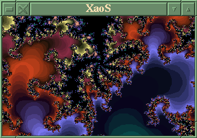

![[ TABLE OF CONTENTS ]](../gx/indexnew.gif)
![[ FRONT PAGE ]](../gx/homenew.gif)


Transforming certain recursive complex-number formulae into images of unlimited depth and complexity was only made possible by the development of the modern computer. Benoit Mandelbrot, a Belgian researcher working for IBM, first discovered the Mandelbrot set in 1981. By the mid-eighties personal computers had evolved to the point that anyone could experiment with various fractals, and programmers soon discovered that the 8-bit 256-color vga palette could be mapped to various parameters, which allowed the creation of stunning animated images.
The most comprehensive and feature-filled of all fractal-generation programs is Fractint, a freeware program originally written for DOS. Fractint is maintained by a far-flung group of developers, rather like Linux. It was ported to unix by Ken Shirriff and a Linux version is commonly included in many Linux distributions. Not all features of the DOS version work in Linux, and if you just want to see what fractals are all about Fractint is probably overkill. It has such a multitude of options and features that it can be somewhat overwhelming to a new user.
Recently Jan Hubicka (developer of the Koules X-window game) and Thomas Marsh have released a small fractal program for Linux called XaoS. This is an efficient program, with the option to compile both X-Windows and SVGA-console versions. XaoS can't render the dozens of fractal types which Fractint can, but it does the basic Mandelbrot and Julia sets quickly, with several keyboard options.
It's developers refer to XaoS as "an interactive real-time fractal zoomer," and zooming in on an area of the Mandelbrot set is where XaoS excels. Pressing a mouse button anywhere in the image will begin a zoom with the location of the cursor as target. The "autopilot" mode is quite impressive; pressing "a" will start an automatic zoom which homes in on detailed areas. In the X-windows version the default window-size is 320x200; if you don't mind the cpu-usage a small XaoS window zooming away on the desktop can be pleasant to contemplate as you pause in your work. For those working in virtual consoles an SVGAlib version can be run in a variety of resolutions.
Generating fractal images is inherently CPU-intensive. The faster your processor the better, especially when zooming in real time. XaoS does pretty well on my 80-mhz 486, but this may be near the lower limit.
Here's a screenshot of XaoS:

XaoS only works on 8-bit displays at present, as is also true of Fractint. Images can be saved to GIF files by means of a keystroke.
Xaos uses a configure script for compilation, and it should compile easily on most systems. The executable is only about fifty kilobytes and is completely self-contained, i.e. no subsidiary files are required.
The Xaos home-page is a good source for the latest version; the source has also been uploaded to Sunsite and its mirrors.
Larry Ayers